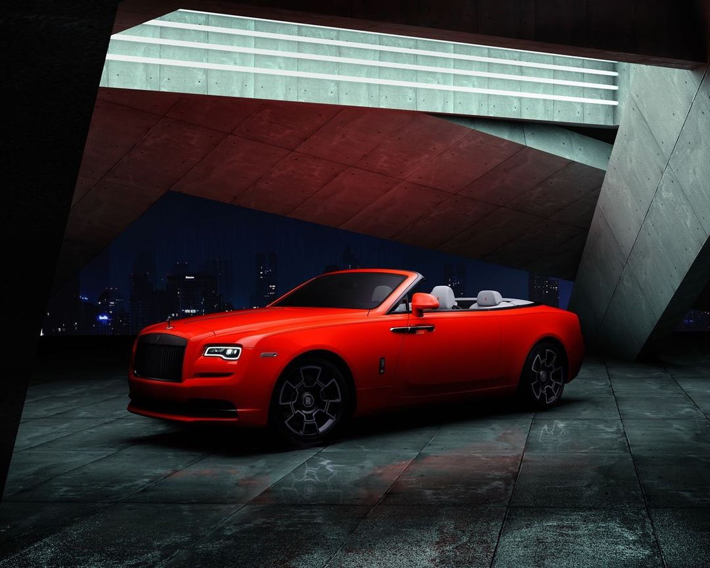
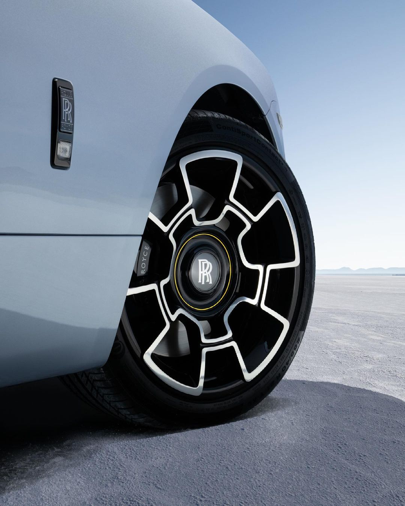
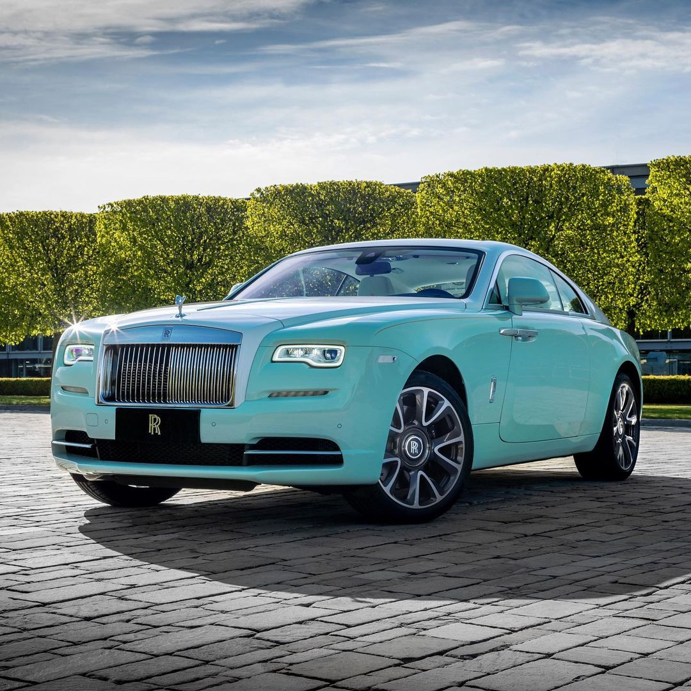
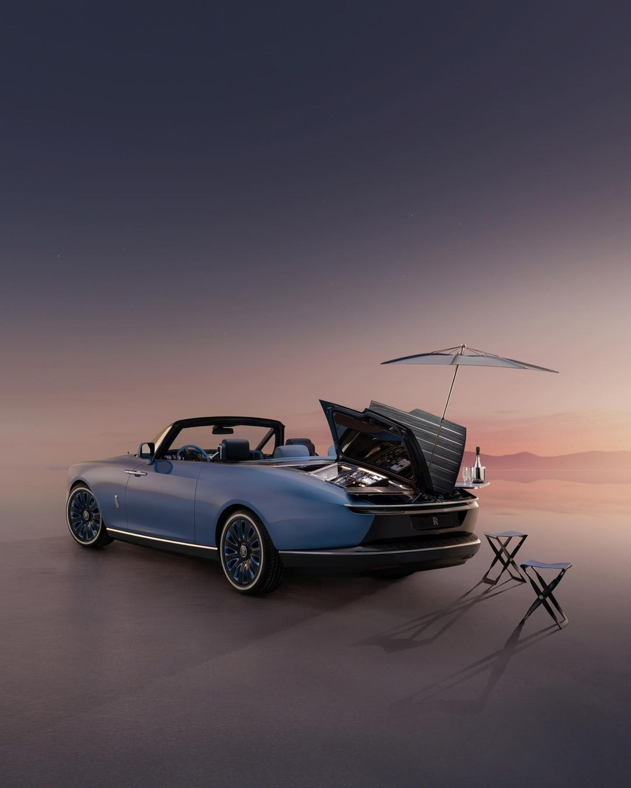
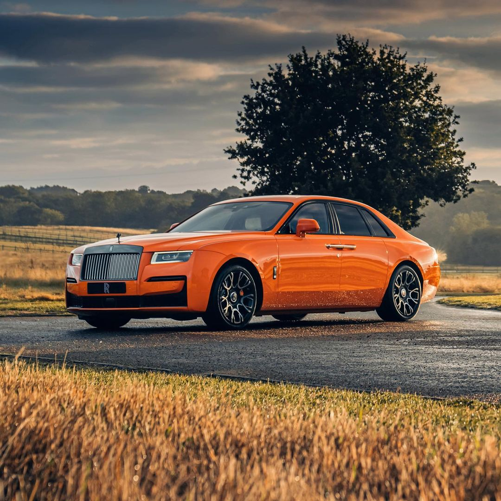
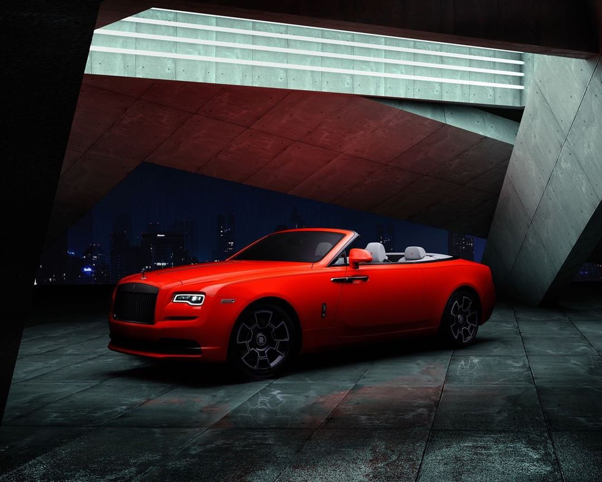
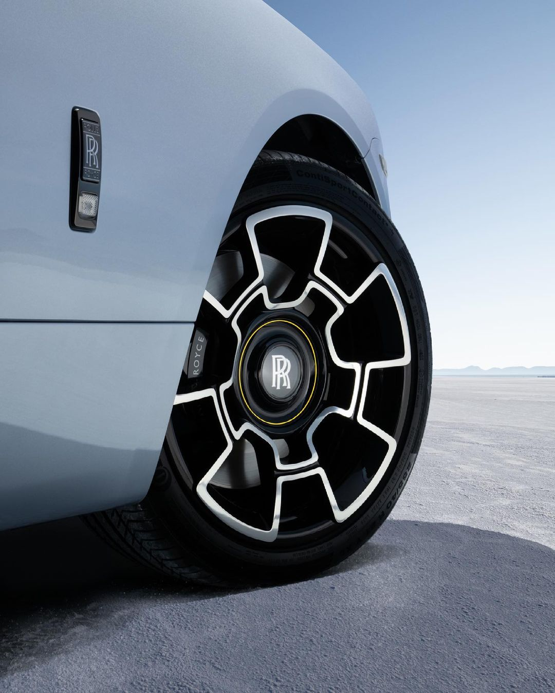
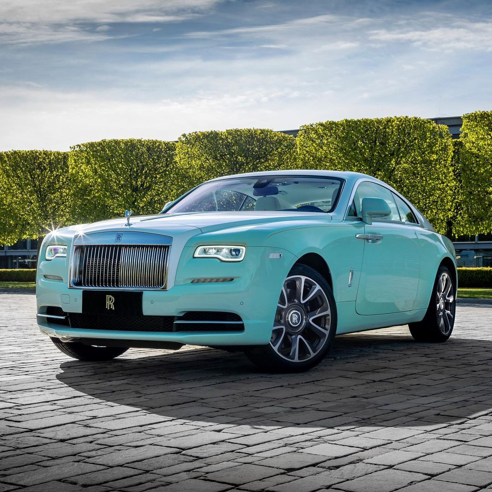
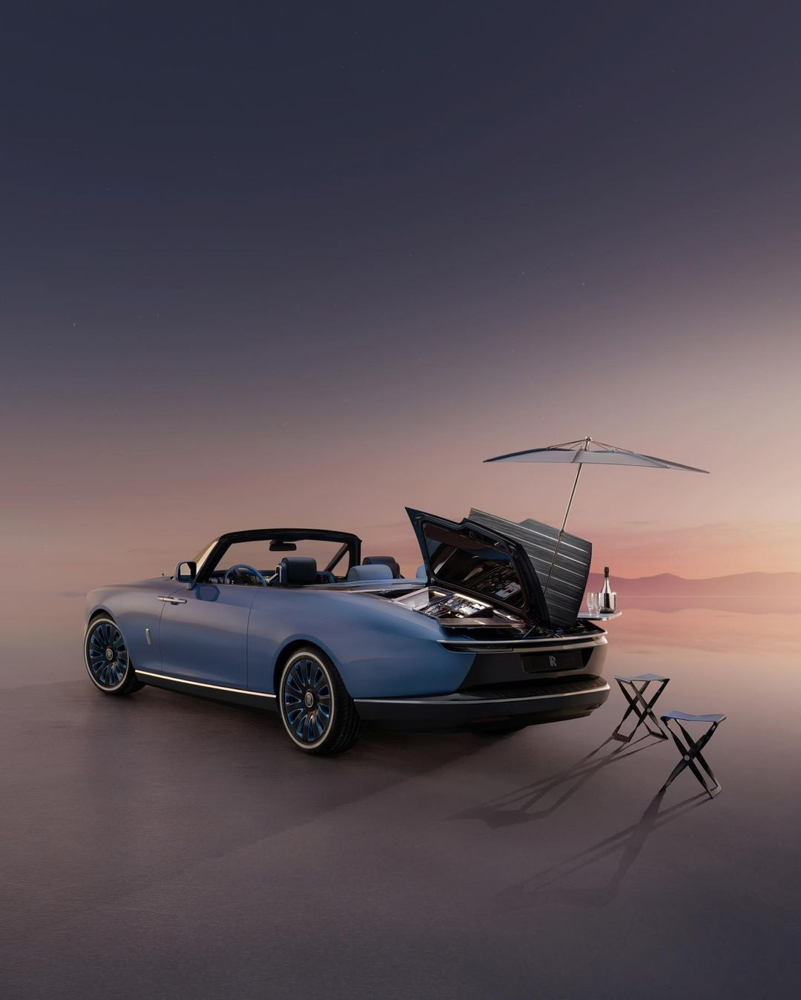
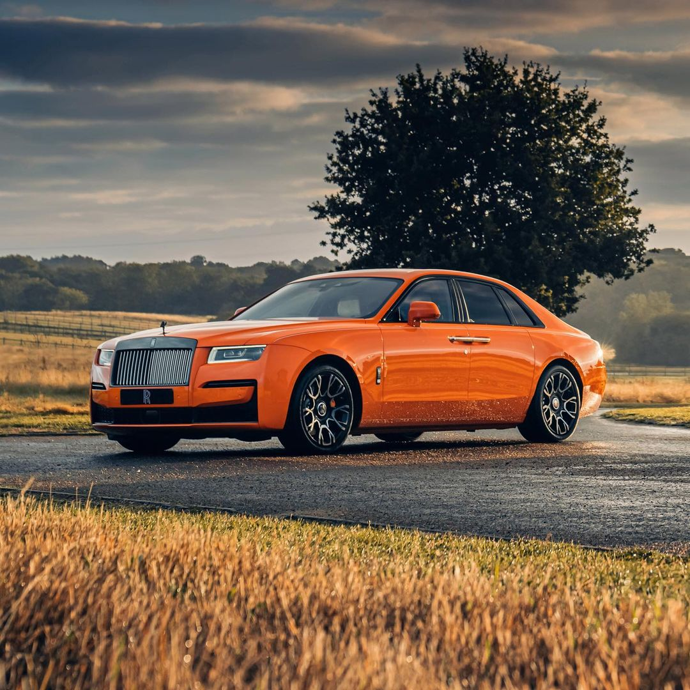

.jpeg) 









Rolls-Royce Holdings plc is a British multinational aerospace and defence company incorporated in February 2011. The company owns Rolls-Royce, a business established in 1904 which today designs, manufactures and distributes power systems for aviation and other industries. Rolls-Royce is the world's second-largest maker of aircraft engines[3] (after General Electric)[4] and has major businesses in the marine propulsion and energy sectors. Rolls-Royce was the world's 16th largest defence contractor in 2018 when measured by defence revenues.[5] The company is also the world's fourth largest commercial aircraft engine manufacturer, with a 12% market share as of 2020.[6] Rolls-Royce Holdings plc is listed on the London Stock Exchange, where it is a constituent of the FTSE 100 Index. At the close of London trading on 28 August 2019, the company had a market capitalisation of £4.656bn, the 85th-largest of any company with a primary listing on the London Stock Exchange.[7] The company's registered office is at Kings Place, near Kings Cross in London.[8]Rolls-Royce grew from the engineering business of Henry Royce, which was established in 1884 and ten years later began to manufacture dynamos and electric cranes. Charles Rolls established a separate business with Royce in 1904 because Royce had developed a range of cars which Rolls wanted to sell. A corporate owner was incorporated in 1906 with the name Rolls-Royce Limited.[9] In 1971 the same company, Rolls-Royce Limited, entered voluntary liquidation because it was unable to meet its financial obligations. It remains in existence today, still in liquidation. Its business and assets were bought by the government using a company created for the purpose named Rolls-Royce (1971) Limited. Rolls-Royce Motors was separated out in 1973. Rolls-Royce (1971) Limited currently carries on the business under the name Rolls-Royce plc.[10] Rolls-Royce plc returned to the stock market in 1987 under the government of Margaret Thatcher. In 2003 ownership of Rolls-Royce plc was passed to Rolls-Royce Group plc. In the same way, Rolls-Royce Group plc passed ownership on 23 May 2011 to Rolls-Royce Holdings plc.[11] Throughout these corporate changes Rolls-Royce plc has remained the principal trading company.[11][nb 1] The company's registered office is at Kings Place, near Kings Cross in London.[8]Rolls-Royce grew from the engineering business of Henry Royce, which was established in 1884 and ten years later began to manufacture dynamos and electric cranes. Charles Rolls established a separate business with Royce in 1904 because Royce had developed a range of cars which Rolls wanted to sell. A corporate owner was incorporated in 1906 with the name Rolls-Royce Limited.[9] In 1971 the same company, Rolls-Royce Limited, entered voluntary liquidation because it was unable to meet its financial obligations. It remains in existence today, still in liquidation. Its business and assets were bought by the government using a company created for the purpose named Rolls-Royce (1971) Limited. Rolls-Royce Motors was separated out in 1973. Rolls-Royce (1971) Limited currently carries on the business under the name Rolls-Royce plc.[10] Rolls-Royce plc returned to the stock market in 1987 under the government of Margaret Thatcher. In 2003 ownership of Rolls-Royce plc was passed to Rolls-Royce Group plc. In the same way, Rolls-Royce Group plc passed ownership on 23 May 2011 to Rolls-Royce Holdings plc.[11] Throughout these corporate changes Rolls-Royce plc has remained the principal trading company.[11][nb 1] Rolls-Royce was the world's 16th largest defence contractor in 2018 when measured by defence revenues.[5] The company is also the world's fourth largest commercial aircraft engine manufacturer, with a 12% market share as of 2020.[6] Rolls-Royce Holdings plc is listed on the London Stock Exchange, where it is a constituent of the FTSE 100 Index. At the close of London trading on 28 August 2019, the company had a market capitalisation of £4.656bn, the 85th-largest of any company with a primary listing on the London Stock Exchange.[7] The company's registered office is at Kings Place, near Kings Cross in London.[8]Rolls-Royce grew from the engineering business of Henry Royce, which was established in 1884 and ten years later began to manufacture dynamos and electric cranes. Charles Rolls established a separate business with Royce in 1904 because Royce had developed a range of cars which Rolls wanted to sell. A corporate owner was incorporated in 1906 with the name Rolls-Royce Limited.[9] In 1971 the same company, Rolls-Royce Limited, entered voluntary liquidation because it was unable to meet its financial obligations. It remains in existence today, still in liquidation. Its business and assets were bought by the government using a company created for the purpose named Rolls-Royce (1971) Limited. Rolls-Royce Motors was separated out in 1973. Rolls-Royce (1971) Limited currently carries on the business under the name Rolls-Royce plc.[10] Rolls-Royce plc returned to the stock market in 1987 under the government of Margaret Thatcher. In 2003 ownership of Rolls-Royce plc was passed to Rolls-Royce Group plc. In the same way, Rolls-Royce Group plc passed ownership on 23 May 2011 to Rolls-Royce Holdings plc.[11] Throughout these corporate changes Rolls-Royce plc has remained the principal trading company.[11][nb 1] The company's registered office is at Kings Place, near Kings Cross in London.[8]Rolls-Royce grew from the engineering business of Henry Royce, which was established in 1884 and ten years later began to manufacture dynamos and electric cranes. Charles Rolls established a separate business with Royce in 1904 because Royce had developed a range of cars which Rolls wanted to sell. A corporate owner was incorporated in 1906 with the name Rolls-Royce Limited.[9] In 1971 the same company, Rolls-Royce Limited, entered voluntary liquidation because it was unable to meet its financial obligations. It remains in existence today, still in liquidation. Its business and assets were bought by the government using a company created for the purpose named Rolls-Royce (1971) Limited. Rolls-Royce Motors was separated out in 1973. Rolls-Royce (1971) Limited currently carries on the business under the name Rolls-Royce plc.[10] Rolls-Royce plc returned to the stock market in 1987